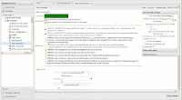
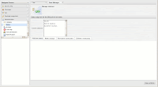
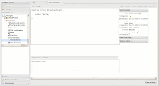

Drools 5.0 M3/M4 New and Noteworthy Release Summary
Previous New and Noteworth release summary notes:
M1
M2
Drools Guvnor
- Category rules allows you to set ‘parent rules’ for a category. Any rules appearing in the given category will ‘extend’ the rule specified – ie inherit the conditions/LHS. The base rule for the category can be set on package configuration tab. RHS is not inherited, only the LHS
- Scenario runner detects infinite loops
- Scenario runner can show event trace that was recorded by audit logger

- DSL sentences in guided editor can now be set to show enums as a dropdown, dates as a date picker, booleans as a checkbox and use regular expressions to validate the inputs (DSL Widgets in Guvnor)
- Status can be created, renamed and deleted

Functions can be edited with text editor

Drools API
Drools now has complete api/implementation separation that is no longer rules oriented. This is an important strategy as we move to support other forms of logic, such as workflow and event processing. The main change is that we are now knowledge oriented, instead of rule oriented. The module drools-api provide the interfaces and factories and we have made pains to provide much better javadocs, with lots of code snippets, than we did before. Drools-api also helps clearly show what is intended as a user api and what is just an engine api, drools-core and drools-compiler did not make this clear enough.
The most common interfaces you will use are:
- org.drools.builder.KnowledgeBuilder
- org.drools.KnowledgeBase
- org.drools.agent.KnowledgeAgent
- org.drools.runtime.StatefulKnowledgeSession
- org.drools.runtime.StatelessKnowledgeSession
Factory classes, with static methods, provide instances of the above interfaces. A pluggable provider approach is used to allow provider implementations to be wired up to the factories at runtime. The Factories you will most commonly used are:
- org.drools.builder.KnowledgeBuilderFactory
- org.drools.io.ResourceFactory
- org.drools.KnowledgeBaseFactory
- org.drools.agent.KnowledgeAgentFactory
A Typical example to load a rule resource:
KnowledgeBuilder kbuilder = KnowledgeBuilderFactory.newKnowledgeBuilder();
kbuilder.add( ResourceFactory.newUrlResource( url ),
ResourceType.DRL );
if ( kbuilder.hasErrors() ) {
System.err.println( builder.getErrors().toString() );
}
KnowledgeBase kbase = KnowledgeBaseFactory.newKnowledgeBase();
kbase.addKnowledgePackages( builder.getKnowledgePackages() );
StatefulKnowledgeSession ksession = knowledgeBase.newStatefulKnowledgeSession();
ksession.insert( new Fibonacci( 10 ) );
ksession.fireAllRules();
ksession.dispose();
A Typical example to load a process resource. Notice the ResourceType is changed, in accordance with the Resource type:
KnowledgeBuilder kbuilder = KnowledgeBuilderFactory.newKnowledgeBuilder();
kbuilder.add( ResourceFactory.newUrlResource( url ),
ResourceType.DRF );
if ( kbuilder.hasErrors() ) {
System.err.println( builder.getErrors().toString() );
}
KnowledgeBase kbase = KnowledgeBaseFactory.newKnowledgeBase();
kbase.addKnowledgePackages( builder.getKnowledgePackages() );
StatefulKnowledgeSession ksession = knowledgeBase.newStatefulKnowledgeSession();
ksession.startProcess( "Buy Order Process" );
ksession.dispose();
‘kbuilder’, ‘kbase’, ‘ksession’ are the variable identifiers often used, the k prefix is for ‘knowledge’.
We have uniformed how decision trees are loaded, and they are now consistent with no need to pre generate the DRL with the spreadsheet compiler:
DecisionTableConfiguration dtconf = KnowledgeBuilderFactory.newDecisionTableConfiguration();
dtconf.setInputType( DecisionTableInputType.XLS );
dtconf.setWorksheetName( "Tables_2" );
kbuilder.add( ResourceFactory.newUrlResource( "file://IntegrationExampleTest.xls" ),
ResourceType.DTABLE,
dtconf );
It is also possible to configure a KnowledgeBase using configuration, via a xml change set, instead of programmatically. Here is a simple change set:
<change-set xmlns='http://drools.org/drools-5.0/change-set'
xmlns:xs='http://www.w3.org/2001/XMLSchema-instance'
xs:schemaLocation='http://drools.org/drools-5.0/change-set change-set-5.0.xsd' >
<add>
<resource source='classpath:org/domain/someRules.drl' type='DRL' />
<resource source='classpath:org/domain/aFlow.drf' type='DRF' />
</add>
</change-set>
And it is added just like any other ResourceType
KnowledgeBuilder kbuilder = KnowledgeBuilderFactory.newKnowledgeBuilder();
kbuilder.add( ResourceFactory.newUrlResource( url ),
ResourceType.ChangeSet );
The other big change for the KnowledgeAgent, compared to the RuleAgent, is that polling scanner is now a service. further to this there is an abstraction between the agent notification and the resource monitoring, to allow other mechanisms to be used other than polling. These services currently are not started by default, to start them do the following:
ResourceFactory.getResourceChangeNotifierService().start();
ResourceFactory.getResourceChangeScannerService().start();
There are two new interfaces added, ResourceChangeNotifier and ResourceChangeMonitor. KnowlegeAgents subscribe for resource change notifications using the ResourceChangeNotifier implementation. The ResourceChangeNotifier is informed of resource changes by the added ResourceChangeMonitors. We currently only provide one out of the box monitor, ResourceChangeScannerService, which polls resources for changes. However the api is there for users to add their own monitors, and thus use a push based monitor such as JMS.
ResourceFactory.getResourceChangeNotifierService().addResourceChangeMonitor( myJmsMonitor);
StatelessKnowledgeSessions now support in, inout and out parameters, as apposed to the GlobalExporter:
Parameters parameters = session.newParameters();
Map globalsIn = new HashMap();
globalsIn.put( "inString", "string" );
parameters.getGlobalParams().setIn( globalsIn );
parameters.getGlobalParams().setOut( Arrays.asList( new String[]{"list"} ) );
Map factIn = new HashMap();
factIn.put( "inCheese", cheddar );
parameters.getFactParams().setIn( factIn );
parameters.getFactParams().setOut( Arrays.asList( new String[]{ "outCheese"} ) );
StatelessKnowledgeSessionResults results = session.executeObjectWithParameters( collection, // these facts are anonymous
parameters );
Drools Fusion
Event Garbage Collection
Since events usually have strong temporal relationships, it is possible to infer a logical time window when events can possibly match. The engine uses that capability to calculate when an event is no longer capable of matching any rule anymore and automatically retracts that event.
Time Units Support
Drools adopted a simplified syntax for time units, based on the ISO 8601 syntax for durations. This allows users to easily add temporal constraints to the rules writing time in well known units. Example:
SomeEvent( this after[1m,1h30m] $anotherEvent )
The above pattern will match if SomeEvent happens between 1 minute (1m) and 1 hour and 30 minutes after $anotherEvent.
Drools Flow
The Drools Flow framework has been further extended with the following features:
- Process instances can now listen for external events by marking the event node property “external” as true. External events are signaled to the engine using
session.signalEvent(type, eventData)
More information on how to use events inside your processes can be found in the Drools Flow documentation here: https://hudson.jboss.org/hudson/job/drools/lastSuccessfulBuild/artifact/trunk/target/docs/drools-flow/html/ch03.html#d0e917
- Process instances are now safe for multi-threading (as multiple thread are blocked from working on the same process instance)
- Process persistence / transaction support has been further improved. Check out the drools-process/drools-process-enterprise project for more information.
- The human task component has been extended to support all kinds of data for input / output / exceptions during task execution. As a result, the life cycle methods of the task client have been extended to allow content data:
taskClient.addTask(task, contentData, responseHandler)
taskClient.complete(taskId, userId, outputData,responseHandler)
taskFail.complete(taskId, userId, outputData,responseHandler)long contentId = task.getTaskData().getDocumentContentId();
taskClient.getContent(contentId, responseHandler);
ContentData content = responseHandler.getContent(); - It is now possible to migrate old Drools4 RuleFlows (using the xstream format) to Drools5 processes (using readable xml) during compilation. Migration will automatically be performed when adding the RuleFlow to the KnowledgeBase when the following system property is set:
drools.ruleflow.port = true
- The “Transform” work item allows you to easily transform data from one format to another inside processes. The code and an example can be found in the drools-process/drools-workitems directory.
- Function imports are now also supported inside processes.
Eclipse IDE
The Drools Eclipse Plugin contains the following improvements
- Support multiple runtimes: The IDE now supports multiple runtimes. A Drools runtime is a collection of jars on your file system that represent one specific release of the Drools project jars. To create a runtime, you must either point the IDE to the release of your choice, or you can simply create a new runtime on your file system from the jars included in the Drools Eclipse plugin. Drools runtimes can be configured by opening up the Eclipse preferences and selecting the Drools -> Installed Drools Runtimes category, as shown below.
- Debugging of rules using the MVEL dialect has been fixed
- Drools Flow Editor
- Process Skins allow you to define how the different RuleFlow nodes are visualized. We now support two skins: the default one which existed before and a BPMN skin that visualizes the nodes using a BPMN-like representation: http://blog.athico.com/2008/10/drools-flow-and-bpmn.html
- An (X)OR split now shows the name of the constraint as the connection label
- Custom work item editors now signal the process correctly that it has been changed

{kind=link}
{kind=link}
{kind=link}
{kind=link}